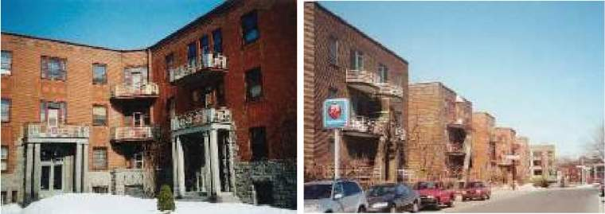
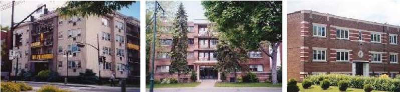

Phase 1
1915 – 1935
Phase 1 · 1915 – 1935 · By-law art. 19
Garden City House Maison cité-jardin

The founding house type of TMR. When Frederick Todd laid out the town in 1912 he was borrowing directly from Ebenezer Howard's Garden City movement, and the first houses near the station borrowed the movement's architecture too: the English Arts-and-Crafts cottage of Letchworth and Hampstead Garden Suburb. Look for steep 45° gables, a brick ground floor with stucco or half-timbering above, small-paned windows, and a deliberately picturesque, asymmetrical silhouette that reads as a cottage in a garden rather than a house on a street.
What By-law 1449 says about this type ›
Siting & landscape
- At least 60 % of the front yard kept as vegetation
- Side driveway, minimum width about 2.5 m
- Narrow pedestrian path (curved or not), separate from the driveway
- Front setback of about 14 m from the sidewalk; side setbacks of about 3.5 m
- Typical lot width 10–12 m
Massing
- Fragmented volumes
- Typical width of 7.5 m per semi-detached unit, 15 m for a detached house
- Habitable attic storey
- Projecting elements (balconies, entrance vestibules, verandas, solariums) may be altered if they still read as distinct from the main volume through a light cladding (wood, aluminium, composite or acrylic) and keep their high degree of openness
- Detached garage, or one set back from the front façade so it reads as a separate volume
Articulation
- Multi-slope roofs, steeply pitched (45°), with gables
- Asymmetrical composition
Openings
- Small-paned glazing
- Bay windows may be added if they respect the type
- Vertical window proportion (height = twice the width)
Materials
- Brownish-red clay brick on the ground floor, in a small traditional module (4 in. deep × 8 in. long × 2.5 in. high)
- Stucco and/or wood half-timbering on the upper floor and in the gables
- Dark asphalt shingle roofing
- Same roofing material (texture and colour) on the main roof and on porch and gallery roofs
- Wood balustrades and columns for balconies and galleries
Phase 1 · 1915 – 1935 · By-law art. 20
Faubourg House Maison faubourienne

“Faubourien” refers to the vernacular of Montreal's old inner suburbs (the faubourgs): a plain two-storey brick box, flat or hipped roof, sometimes a false mansard, and a front verandah on wooden columns. In TMR the type is what the Plateau or Rosemont row house becomes when it is given its own lot, a side driveway and a lawn. Its virtue is restraint: symmetry, aligned windows, one material.
What By-law 1449 says about this type ›
Siting & landscape
- At least 60 % of the front yard kept as vegetation
- Side driveway, minimum width 2.5 m
- Narrow pedestrian path (curved or not), distinct from the driveway
- Front setback of about 10 m from the sidewalk; side setbacks of about 4–8 m
Massing
- Simple, rather cubic volumes of two full storeys
- Main entrance visible, either on the side or the front
- Detached garage, or one set back from the front façade so it reads as a separate volume
- Typical width of 7.5 m per semi-detached unit, 14 m for a detached house
- Projecting elements (balconies, vestibules, verandas, solariums) may be enclosed if they still read as distinct through a light cladding (wood, aluminium, composite or acrylic) and keep their openness
Articulation
- Flat, hipped, false-mansard or gabled roofs
- Aligned openings and symmetrical composition
Openings
- Small-paned glazing
- Bay windows may be added if they respect the type
- Vertical window proportion (height = twice the width)
Materials
- Brownish-red clay brick in a small traditional module (4 × 8 × 2.5 in.)
- Dark asphalt shingle roofing
- Same roofing material on the main roof and on porch and gallery roofs
- Wood balustrades and columns for balconies and galleries
Phase 1 · 1915 – 1935 · By-law art. 21
Faubourg Apartment Block Faubourg (collectif)

The interwar Montreal walk-up, three storeys of red brick under a flat roof, with a decorated parapet, a stone base, patterned brickwork and a prominent entrance portico. Balconies with iron or stone railings give the façade its rhythm. These sit on the town's few multi-family lots and are the collective sibling of the faubourg house.
What By-law 1449 says about this type ›
Siting & landscape
- At least 95 % of the front yard kept as vegetation
- Parking in a basement garage at the rear or side, reached from a lane
Massing
- Simple volumes
- Position and visibility of the main entrances preserved
Articulation
- Base of the building differentiated from the upper floors by a specific treatment
- A single building body crowned by a brick motif and a parapet
- Aligned openings and symmetrical composition preserved
- Balconies, with attention to railing detail
- Entrances sheltered by a substantial portico
Openings
- Divided-light glazing
- Bay windows may be added if they respect the type
- Vertical window proportion maintained (height = twice the width)
- Character of the wooden entrance doors and their glazing proportion preserved
- Window frame colour coordinated with the facing brick
Materials
- Brownish-red clay brick in a traditional module (4 × 8 × 2.5 in.)
- Distinctive brick patterns and bonds on the facing walls
- Flat roof
- Stone, steel and wrought iron for balcony balustrades and columns
Phase 2
1935 – 1955
Phase 2 · 1935 – 1955 · By-law art. 22
Canadian House Maison canadienne

A 1930s–50s revival of the 18th-century Quebec farmhouse: a steep roof whose eaves flare out into “larmiers” that shelter the front door, a row of dormers, fieldstone walls, and a calm symmetrical front. It was the domestic face of a broader interwar interest in Québécois heritage. The distinctive move is the roof, which is asked to express the base of the house through its overhang.
What By-law 1449 says about this type ›
Siting & landscape
- At least 60 % of the front yard kept as vegetation
- Driveway of medium width
- Narrow pedestrian path distinct from the driveway
- Front setback of about 14 m from the sidewalk; side setbacks of about 3 m
- Typical lot width 15–22 m
Massing
- Habitable attic storey
- Main entrance sheltered by the roof's drip edge (larmier)
- Attached garages
- Garage volume and roof distinct from those of the main building
- Typical width of 11 m per semi-detached unit, 15 m for a detached house
Articulation
- Base of the building expressed by the roof overhang
- Two- or four-slope roofs with dormers or a mansard
- Flared eaves (larmiers) typical of Canadian roofs
- Aligned openings and symmetrical composition
Openings
- Small-paned glazing
- Bay windows may be added if they respect the type
- Vertical window proportion (height = twice the width)
Materials
- Natural stone facing
- Dark asphalt shingle roofing
- Same roofing material on the main roof and on dormer roofs
Phase 2 · 1935 – 1955 · By-law art. 23
New England House Maison Nouvelle-Angleterre

Colonial Revival as it arrived from the American Northeast: a long, simple gabled rectangle with its broad side to the street, symmetrical windows, dormers set halfway up the roof, and a discreet canopy over the front door. Brick or stone below, clapboard or stucco above. It is quieter than the Georgian house, and the by-law wants it kept quiet: bay windows are the only projections allowed.
What By-law 1449 says about this type ›
Siting & landscape
- At least 60 % of the front yard kept as vegetation
- Side driveway of medium width
- Narrow pedestrian path distinct from the driveway
- Front setback of about 10 m from the sidewalk; side setbacks of about 3.5–5 m
- Typical lot width 15–22 m
Massing
- Simple rectangular volumes with the long side facing the street
- Attached garage, set back from the main volume
- Front entrance with a discreet canopy
- Aligned openings and symmetrical composition
- Canopies may be converted into enclosed entrance vestibules if they read as distinct through a light cladding (wood, aluminium, composite or acrylic) and keep a high degree of openness
Articulation
- Double-slope roofs of medium pitch (30–45°)
- Base expressed, where a base/body distinction already exists, up to the height of the ground-floor lintels
- Dormers placed halfway between the upper floor and the roof
- Bay windows are the only projecting elements
Openings
- Small-paned glazing
- Vertical window proportion maintained (height = twice the width)
Materials
- Natural stone or red clay brick, either full height or on the ground floor only with stucco or clapboard above
- Brick in a small traditional module (4 × 8 × 2.5 in.)
- Dark asphalt shingle roofing
- Same roofing material on the main roof and on dormer roofs
Phase 2 · 1935 – 1955 · By-law art. 24
New England Apartment Block Nouvelle-Angleterre (collectif)

Low-rise red-brick apartment courts arranged in U or L plans around a green forecourt, with steep gables, dormers and the occasional turret. A stone base and stone string courses tie them to the collegiate-Tudor mood of the interwar decades. Entrances are marked by a distinct architectural element rather than a big portico.
What By-law 1449 says about this type ›
Siting & landscape
- At least 95 % of the front yard kept as vegetation
- Basement parking garage at the rear or side, reached from a lane
Massing
- Simple volumes with recesses and projections forming U- or L-shaped plans
- Main entrance underlined by a distinct architectural element
- Alignment of openings preserved
Articulation
- Double-slope roofs of steep pitch (45° and more), with gables and dormers
- Dormers placed halfway between the upper floor and the roof
- Base expressed up to the ground-floor window lintels or the upper-floor window sills
- Vertical elements projecting from the main volume (turrets, gable walls, etc.)
Openings
- Divided-light glazing
- Vertical window proportion maintained (height = twice the width)
Materials
- Red clay brick as the main facing
- Natural stone at the base and as horizontal banding
- Brick in a traditional module (4 × 8 × 2.5 in.)
- Dark asphalt shingle roofing
- Same roofing material on the main roof and on gable and dormer roofs
- Soffit materials similar to the originals
Phase 2 · 1935 – 1955 · By-law art. 25
Georgian House Maison géorgienne

Georgian Revival: the most formal of TMR's houses. A red-brick box of two full storeys, three or five bays wide, with a central door flanked by pilasters and topped by an elaborate crown, sash windows with small panes, and a frieze under a moderately pitched hip or side-gabled roof. Symmetry is the whole point; the by-law lets you emphasise the central bay with a slight projection and a pediment, and nothing more.
What By-law 1449 says about this type ›
Siting & landscape
- At least 60 % of the front yard kept as vegetation
- Side driveway of medium width
- Narrow pedestrian path (curved or not) distinct from the driveway
- Typical lot width 15–22 m
- Front setback of about 14 m from the sidewalk; side setbacks of about 3.5–6 m
Massing
- Simple volumes of two full storeys
- Symmetrical façade composition
- Typical width of 13.5 m per semi-detached unit, 15 m for a detached house
- Attached garage, set back and smaller than the main volume
- Vestibule inside the main volume
Articulation
- Uniform treatment over the full height of the main body, crowned by a frieze
- Hierarchy reinforced by a distinctive treatment of secondary volumes
- Vertical distribution of the façade openings in three or five bays
- The central bay may be emphasised by a slight projection topped with a pediment (gable)
- Roofs of medium pitch (30–40°) with side gables or pyramidal, with narrow soffits
Openings
- Sash (guillotine) windows with small panes
- Vertical window proportion (height = twice the width)
- Central entrance door flanked by pilasters and topped by an elaborate crown acting as a canopy
Materials
- Brownish-red clay brick
- Brick in a small traditional module (4 × 8 × 2.5 in.)
- A light material (wood, aluminium, composite or acrylic) may be used in gables and the upper part of secondary volumes
- Dark asphalt shingle roofing
Phase 2 · 1935 – 1955 · By-law art. 26
English Manor House Maison manoir anglais

Tudor Revival, TMR's most romantic type: steep 45° roofs broken into several gables, a natural-stone ground floor with brick or half-timbered stucco above, patterned brickwork (herringbone, Dutch bond), small-paned casements, sometimes a round turret at the entrance. Where the Georgian house is symmetrical, the manor is deliberately picturesque, and its garage is meant to hide.
What By-law 1449 says about this type ›
Siting & landscape
- At least 60 % of the front yard kept as vegetation
- Side driveway of medium width
- Narrow pedestrian path (curved or not) distinct from the driveway
- Typical lot width 15–22 m
- Front setback of about 14 m from the sidewalk; side setbacks of about 3.5–6 m
Massing
- Projections or volumetric modulation allowing the roofs to articulate
- Part of the attic storey habitable
- Asymmetrical composition
- Typical width of 13.5 m per semi-detached unit, 15 m for a detached house
- Small attached garage set back from the main volume
- Original recessed entrances preserved
Articulation
- Transition from base to body marked by a specific detail, where such a distinction exists
- A particular level of cladding detail on the body (half-timbering, brick motifs, etc.)
- Multi-slope roofs of steep pitch (45°) with gables and dormers
Openings
- Small-paned glazing
- Vertical window proportion (height = twice the width)
Materials
- Natural stone on the ground floor with brownish-red clay brick, or stucco with wood half-timbering, on the upper floor
- Brick in a small traditional module (4 × 8 × 2.5 in.) with worked bonds (herringbone, Dutch bond, etc.)
- Dark asphalt shingle roofing
- Same roofing material on the main roof and on porch and gallery roofs
Phase 3
1955 – 1975
Phase 3 · 1955 – 1975 · By-law art. 27
Bungalow Maison bungalow

The postwar ranch bungalow: one storey, long and low, with a shallow-pitched roof whose overhang shelters a recessed door, a garage pushed forward into the façade, and big undivided windows wider than they are tall. Buff (“chamois”) brick or stone, black shingles, a wide driveway. The type that arrived with the car and the last empty lots of the 1950s and 60s.
What By-law 1449 says about this type ›
Siting & landscape
- At least 60 % of the front yard kept as vegetation
- Wide driveway
- Pedestrian path joins the driveway
- Front setback of about 10 m from the sidewalk; side setbacks of about 1.5 m
- Typical lot width 20–25 m
Massing
- Simple, horizontal volumes
- Attic additions and alterations respect the massing
- Integrated garages, in the façade
- Typical width of 15 m per semi-detached unit and 15 m for a detached house
- Entrance sheltered by the roof overhang
Articulation
- Garage projecting in the façade
- Recessed entrance protected by the roof overhang
- Two- or four-slope roofs of low pitch (30°)
Openings
- Glazing without small panes
- Bay windows may be added if they respect the type
- Horizontal window proportion (width = twice the height)
Materials
- Natural stone or buff (chamois) clay brick
- Black asphalt shingles, or a tone matched to the cladding colour
- A light cladding (wood, aluminium, composite or acrylic) may be used for architectural elements
Phase 3 · 1955 – 1975 · By-law art. 28
Cottage Maison cottage

In Quebec usage a “cottage” is simply a two-storey detached house, and this is its postwar version: a plain box under a low hip roof, stone or brick on the ground floor with stucco or siding above, garage built into the front, and a flat marquise over the door. A visible line at the ground-floor lintels or the upper sills divides base from body.
What By-law 1449 says about this type ›
Siting & landscape
- At least 60 % of the front yard kept as vegetation
- Wide driveway
- Pedestrian path joins the driveway
- Front setback of about 12 m from the sidewalk; side setbacks of about 2.5 m
- Typical lot width 20–25 m
Massing
- Simple volumes of two full storeys
- Typical width of 15 m per semi-detached unit, 16 m for a detached house
- Garage integrated into the volume, in the façade
- Entrance sheltered by a marquise
Articulation
- A base distinguished by a dividing line at the ground-floor window lintels or the upper-floor window sills
- Four-slope roofs of low pitch (30°)
Openings
- Glazing without small panes
- Bay windows may be added if they respect the type
- Horizontal window proportion (width = twice the height)
Materials
- Natural stone or red clay brick on the ground floor
- Stucco or clapboard on the upper floor
- Black asphalt shingles, or a tone matched to the cladding colour
Phase 3 · 1955 – 1975 · By-law art. 29
Split-Level Maison demi-niveau

Two volumes offset by half a storey: a one-storey wing beside a one-and-a-half-storey wing, with the garage tucked under the bedrooms and pushed forward, and a recessed entrance under the eaves. Salmon, buff or brown stone with wood or metal infill panels; both roofs share one low-pitched material. The interior stair does the work the façade shows.
What By-law 1449 says about this type ›
Siting & landscape
- At least 60 % of the front yard kept as vegetation
- Wide driveway
- Pedestrian path joins the driveway
- Front setback of about 12 m from the sidewalk; side setbacks of about 2.5 m
- Typical lot width 20–25 m
Massing
- Recessed entrance protected by the roof overhang
- Attic additions and alterations respect the massing
- Garage integrated into the volume and projecting from the façade
Articulation
- Composition in two vertical sections, one of one storey and the other of one and a half storeys
- A base expressed on the one-and-a-half-storey volume, continuous with the level of the one-storey part
- Two- or four-slope roofs of low pitch (30°)
- Typical width of 15 m per semi-detached unit and 15 m for a detached house
Openings
- Glazing without small panes
- Bay windows may be added if they respect the type
- Horizontal window proportion (width = twice the height)
Materials
- Salmon, buff, brown or sand natural stone; wood or metal cladding for infill elements
- Black asphalt shingles, or a tone matched to the main cladding
- Same roofing material on both sections
- A light cladding (wood, aluminium, composite or acrylic) may be used for architectural elements
Phase 3 · 1955 – 1975 · By-law art. 30
Prairie House Maison Prairie

Frank Lloyd Wright's Prairie idiom, filtered through 1960s Montreal: relentless horizontality, low pyramidal or multi-hipped roofs with deep soffits, upper windows tucked right under the eaves and running around the corners as ribbons, long “Roman” brick or long-cut stone, and one-storey wings (garage, porch, solarium) that stretch the composition sideways. Asymmetrical, and the most architect-driven of the phase-3 types.
What By-law 1449 says about this type ›
Siting & landscape
- At least 60 % of the front yard kept as vegetation
- Wide driveway
- Pedestrian path joins the driveway
- Front setback of about 12 m from the sidewalk; side setbacks of about 2.5 m
- Typical lot width 20–25 m
Massing
- Asymmetrical composition
- Simple volumes of two full storeys
- One-storey porch or secondary volumes (garage, solarium, etc.) that reinforce the horizontality
Articulation
- A base ending below the upper-floor window sills
- Horizontality reinforced by the details
- Low-pitched (30°) pyramidal or multi-slope roofs with deep soffits
- Typical width of 15 m for both semi-detached and detached units
Openings
- Windows subdivided horizontally, without small panes
- Bay windows may be added if they respect the type
- Upper-floor windows directly under the horizontal soffit line
- Ribbon windows that may wrap the corners of volumes
- Horizontal window proportion (width > height)
Materials
- Brownish-red clay brick or natural stone
- Elongated “Roman” brick module, or long cut stone
- A light material (wood, aluminium, composite or acrylic) may be used in gables and above the base
- Dark asphalt shingles, or a tone matched to the main cladding
Phase 3 · 1955 – 1975 · By-law art. 31
Modern Apartment Block Moderne (collectif)

The 1950s–70s modernist apartment building: flat roof finished with a horizontal coping band, a set-back penthouse floor on top, balconies grouped into recessed loggias, wide undivided windows and a marquise over the door. Sand or red brick, often several brick colours on one façade. Parking goes underground; the front yard stays almost entirely green.
What By-law 1449 says about this type ›
Siting & landscape
- At least 95 % of the front yard kept as vegetation
- Basement parking garage at the rear or side, reached from a lane
Massing
- Simple, horizontal volumes
- Entrance sheltered by a marquise
- Main volume crowned by a set-back penthouse storey
Articulation
- Balconies grouped in loggias
- Flat roof with a horizontal coping band
Openings
- Glazing without small panes
- Bay windows may be added if they respect the type
- Horizontal window proportion (width = 2.5 times the height)
Materials
- Clay brick in a sand or red tone
- A variety of brick colours